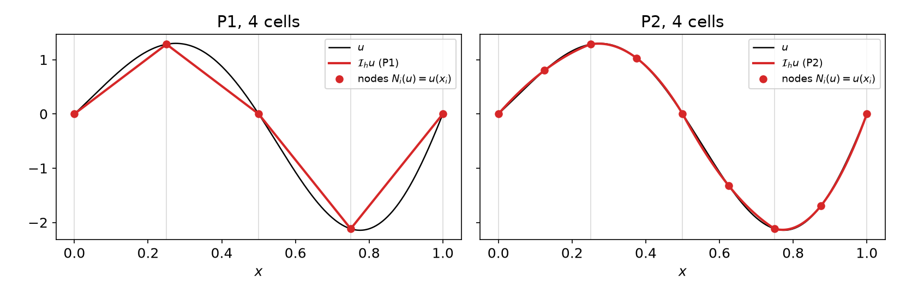
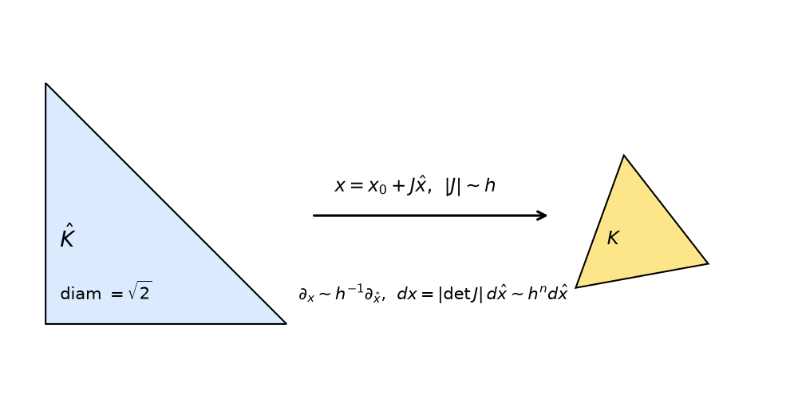
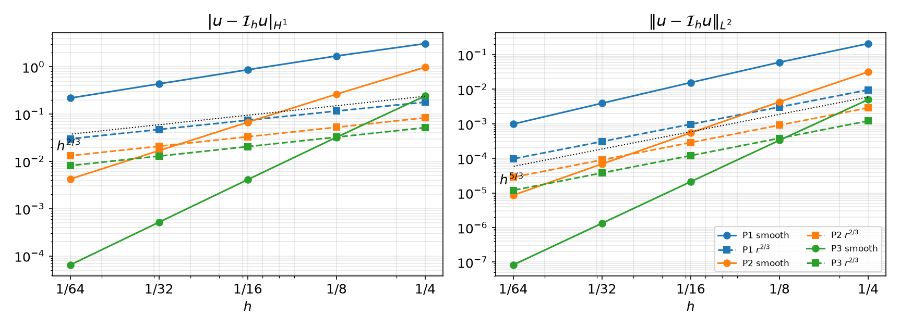

AI-based Materials and Process Simulation I
Week 04 — Interpolation Operators · Sobolev Norms · Averaged Taylor Polynomials and Scaling · Functions, Interpolation and Errors in DOLFINx
Process Systems Laboratory
Department of Chemical and Biomolecular Engineering, SeoulTech
Today
| Part | Topic | Time |
|---|---|---|
| Quiz | Week 3 material (closed-AI) | 10 min |
| A | Theory — interpolation operators, H^k norms, Sobolev embedding, averaged Taylor polynomials, scaling, the error estimate | 70 min |
| B | fem.Function and the ways to interpolate in DOLFINx |
35 min |
| C | Measuring errors, convergence rates, interpolation and I/O | 40 min |
| D | LLM pitfalls with functions and norms · assignment | 15 min |
Lab notebook: W04_lab.ipynb · Assignment: W04_HW4.ipynb (due before Week 5)
Week 3 in one slide
| Global space | cells share the DOFs of shared vertices and edges → C^0 (Lagrange) |
| Dimension | \dim V_h=\sum_d n_d m_d, e.g. (kN+1)^2 for Pk on N\times N |
| Cell-node map | M(c,i); edge DOFs ordered by global vertex numbers for k\ge3 |
| DOLFINx | topology.connectivity, geometry.dofmaps[0], V.dofmap, owned + ghost |
We can now build V_h. This week: how well can V_h approximate a given u?
- The simplest approximation: interpolate, u\mapsto\mathcal I_h u
- How do we measure the error? (H^k norms)
- How fast does it go to zero as h\to0, and what does that depend on? (Taylor + scaling)
- How do we do all this in DOLFINx — and get the numbers right?
Part A — Interpolation Theory
§A1 The local interpolation operator
Definition — Local interpolant
For an element (K,\mathcal P,\mathcal N) with nodal basis \{\phi_i\}: \mathcal I_K v=\sum_i N_i(v)\,\phi_i\ \in\mathcal P . For Lagrange elements N_i(v)=v(x_i): \mathcal I_K v is the polynomial that agrees with v at the nodes.
| Property | Statement | Why |
|---|---|---|
| Linear | \mathcal I_K(\alpha u+v)=\alpha\mathcal I_Ku+\mathcal I_Kv | N_i linear |
| Nodal | N_i(\mathcal I_Kv)=N_i(v) | N_i(\phi_j)=\delta_{ij} |
| Preserves \mathcal P | \mathcal I_Kp=p for all p\in\mathcal P | unisolvence: p-\mathcal I_Kp\in\mathcal P has zero DOFs |
| Projection | \mathcal I_K\mathcal I_K=\mathcal I_K | apply the previous line to p=\mathcal I_Kv |
Polynomial preservation is the engine of the whole theory: the error comes only from the part of v that \mathcal P cannot represent.
§A2 The global interpolation operator
Definition — Global interpolant
\mathcal I_h u\in V_h with (\mathcal I_h u)|_K=\mathcal I_K u for every K\in\mathcal T_h.
Well defined and in V_h: neighbouring cells evaluate the same shared DOFs (Week 3, C^0 decomposition), so the pieces match.

For Lagrange: \mathcal I_h u=\sum_j u(x_j)\,\phi_j — the coefficient vector is just u at the DOF coordinates. That is u_h.interpolate(...).
§A3 Sobolev norms
Multi-index \alpha=(\alpha_1,\dots,\alpha_n), |\alpha|=\sum\alpha_i, D^\alpha u=\partial^{|\alpha|}u/\partial x_1^{\alpha_1}\cdots\partial x_n^{\alpha_n}.
Definition — H^k seminorm and norm
|u|_{H^k(\Omega)}^2=\sum_{|\alpha|=k}\int_\Omega|D^\alpha u|^2\,dx,\qquad \|u\|_{H^k(\Omega)}^2=\sum_{j=0}^k|u|_{H^j(\Omega)}^2 . H^k(\Omega) = functions with finite \|\cdot\|_{H^k} (derivatives in the weak sense — Week 7).
| written out | in UFL | |
|---|---|---|
| \|e\|_{L^2}=\|e\|_{H^0} | \left(\int e^2\right)^{1/2} | inner(e, e) * dx |
| |e|_{H^1} | \left(\int|\nabla e|^2\right)^{1/2} | inner(grad(e), grad(e)) * dx |
| |e|_{H^2} | \left(\sum_{i,j}\int(\partial_{ij}e)^2\right)^{1/2} | inner(grad(grad(e)), grad(grad(e))) * dx |
The seminorm vanishes on polynomials of degree <k: |p|_{H^{k}}=0 for p\in\mathcal P_{k-1}.
§A4 When is \mathcal I_h defined? — Sobolev embedding
Lagrange DOFs are point values. Is u(x_i) meaningful for u\in H^k?
Theorem — Sobolev embedding
If \Omega\subset\mathbb R^n is Lipschitz and k>n/2, then \max_{\bar\Omega}|u|\le C\,\|u\|_{H^k(\Omega)} (and u is continuous).
| n=1 | n=2 | n=3 | |
|---|---|---|---|
| point values bounded for | H^1 | H^2 | H^2 |
In 2D, H^1 is not enough. u(x)=\log\bigl|\log|x|\bigr| on |x|<1/e has \int|\nabla u|^2<\infty but u(0)=\infty. So the estimates below assume u\in H^{k+1} with k+1\ge2, and Lagrange interpolation of a merely H^1 function is not defined. (Other “interpolants” — Clément, Scott–Zhang — average instead of evaluating.)
§A5 Averaged Taylor polynomials
A Taylor polynomial at one point needs pointwise derivatives. Averaging over a ball B gives an integral-friendly version.
Definition — Averaged Taylor polynomial
K star-shaped w.r.t. a ball B, cut-off \varphi\ge0 supported in B with \int\varphi=1: Q_k u(x)=\int_B T^k_y u(x)\,\varphi(y)\,dy,\qquad T^k_yu(x)=\sum_{|\alpha|\le k}\frac{D^\alpha u(y)}{\alpha!}(x-y)^\alpha .
- Q_k u\in\mathcal P_k, and Q_kp=p for p\in\mathcal P_k.
- D^\alpha Q_k u=Q_{k-|\alpha|}D^\alpha u — averaging and differentiation commute.
Theorem — Bramble–Hilbert (Taylor remainder)
On K with diameter d, for 0\le i\le k+1: \;|u-Q_ku|_{H^i(K)}\le C\,d^{\,k+1-i}\,|u|_{H^{k+1}(K)}, with C depending on k, n and the ratio d/\rho_B.
Only the (k+1)-th derivatives of u appear: lower-order parts are reproduced exactly.
§A6 The estimate on the reference cell
Lemma — Reference-cell estimate
On the reference triangle \hat K, for Pk Lagrange (k\ge1) and 0\le i\le k+1: \;|\hat u-\hat{\mathcal I}\hat u|_{H^i(\hat K)}\le \hat C\,|\hat u|_{H^{k+1}(\hat K)}.
Proof. Let p=Q_k\hat u\in\mathcal P_k. Polynomial preservation gives \hat{\mathcal I}p=p, so \hat u-\hat{\mathcal I}\hat u=(\hat u-p)-\hat{\mathcal I}(\hat u-p).
- \|\hat u-p\|_{H^{k+1}(\hat K)}\le C|\hat u|_{H^{k+1}(\hat K)} (Bramble–Hilbert, all i\le k+1).
- \|\hat{\mathcal I}w\|_{H^{k+1}(\hat K)}\le\sum_j|w(\hat x_j)|\,\|\hat\phi_j\|_{H^{k+1}}\le C\max|w|\le C\|w\|_{H^{k+1}(\hat K)} (Sobolev, k+1\ge2>n/2).
- Apply 2 to w=\hat u-p and add. \square
Three ingredients: polynomial preservation, bounded DOFs (Sobolev), Taylor remainder.
§A7 Scaling to a physical cell

Affine map F_K(\hat x)=x_0+J_K\hat x, \hat v=v\circ F_K. Let h_K=\operatorname{diam}K, \rho_K = diameter of the largest inscribed ball.
Lemma — Scaling of seminorms
|v|_{H^m(K)}\le C\,\|J_K^{-1}\|^m\,|\det J_K|^{1/2}\,|\hat v|_{H^m(\hat K)} and |\hat v|_{H^m(\hat K)}\le C\,\|J_K\|^m\,|\det J_K|^{-1/2}\,|v|_{H^m(K)}, with \|J_K\|\le\dfrac{h_K}{\hat\rho}, \|J_K^{-1}\|\le\dfrac{\hat h}{\rho_K}.
Chain rule (m derivatives → m factors of J) and change of variables (dx=|\det J|\,d\hat x).
For Lagrange elements interpolation commutes with the map: \widehat{\mathcal I_Ku}=\hat{\mathcal I}\hat u (nodes map to nodes).
§A7 Scaling — the proof
\begin{aligned} |u-\mathcal I_Ku|_{H^i(K)} &\le C\,\|J_K^{-1}\|^{i}\,|\det J_K|^{1/2}\;|\hat u-\hat{\mathcal I}\hat u|_{H^i(\hat K)} &&\text{(scale down)}\\ &\le C\,\|J_K^{-1}\|^{i}\,|\det J_K|^{1/2}\;\hat C\,|\hat u|_{H^{k+1}(\hat K)} &&\text{(reference estimate)}\\ &\le C\,\|J_K^{-1}\|^{i}\,\|J_K\|^{k+1}\;|u|_{H^{k+1}(K)} &&\text{(scale up)}\\ &\le C\,\Bigl(\frac{h_K}{\rho_K}\Bigr)^{i}\,h_K^{\,k+1-i}\;|u|_{H^{k+1}(K)} . \end{aligned}
- i=0 (L^2): no shape factor at all.
- i\ge1: the factor \sigma_K=h_K/\rho_K appears. Shape regularity — \sigma_K\le\sigma for all cells — makes it a constant.
- Is shape regularity necessary? Thin triangles are common near walls. → HW4 Q3.
§A8 The global estimate
Theorem — Interpolation error
Shape-regular family \{\mathcal T_h\}, Pk Lagrange, u\in H^{k+1}(\Omega), k\ge1. For i=0,1: |u-\mathcal I_hu|_{H^i(\Omega)}\le C\,h^{\,k+1-i}\,|u|_{H^{k+1}(\Omega)},\qquad h=\max_K h_K .
Proof. Square the local estimate and sum over cells: \sum_K h_K^{2(k+1-i)}|u|^2_{H^{k+1}(K)}\le h^{2(k+1-i)}|u|^2_{H^{k+1}(\Omega)}. \square (i\ge2 is not meaningful for C^0 elements globally — \nabla\mathcal I_hu jumps across edges.)
| \|u-\mathcal I_hu\|_{L^2} | |u-\mathcal I_hu|_{H^1} | |
|---|---|---|
| P1 | h^2 | h |
| P2 | h^3 | h^2 |
| P3 | h^4 | h^3 |
Why it matters: Céa’s lemma (Week 7) bounds the FE error by the best approximation, and \mathcal I_hu is one candidate: \|u-u_h\|_{H^1}\le C\inf_{v_h}\|u-v_h\|_{H^1}\le C\|u-\mathcal I_hu\|_{H^1}. Interpolation rates are the FE rates.
§A9 When u is not smooth
If u\in H^{s} only, with 1<s<k+1, the same argument (with k replaced by s-1) gives |u-\mathcal I_hu|_{H^i}\le Ch^{\,s-i}|u|_{H^s}. Regularity, not degree, limits the rate.

| u=r^{2/3} | L^2 rate | H^1 rate |
|---|---|---|
| P1 | 1.66 | 0.66 |
| P2 | 1.67 | 0.67 |
| P3 | 1.67 | 0.67 |
r^{\alpha}\in H^{1+\alpha-\varepsilon} near a 2D corner, so s=5/3: rates 5/3 and 2/3 for every k. Such corner singularities appear in the solutions of PDEs on non-convex domains (L-shapes, re-entrant corners).
Part B — Functions and Interpolation in DOLFINx
§B1 fem.Function: a coefficient vector on a space
u_h=\sum_j u_j\,\phi_j\qquad\longleftrightarrow\qquad \texttt{u.x.array}=(u_0,u_1,\dots)
| 4×4 mesh, P2 | -np 1 |
-np 2, rank 0 |
-np 2, rank 1 |
|---|---|---|---|
len(u.x.array) |
81 | 57 | 57 |
| owned / ghosts | 81 / 0 | 39 / 18 | 42 / 15 |
- If you write into
u.x.arrayyourself, callu.x.scatter_forward()so ghosts get the owners’ values. interpolateand solvers do this for you.- Ghost values are copies: never sum over
u.x.arrayto get a global number.
§B2 Interpolating a Python function
DOLFINx passes the physical coordinates of all interpolation points at once; the callable must be vectorised.
| Mistake | What happens (0.11) |
|---|---|
lambda x: 1.0 |
TypeError: interpolate_f(): incompatible function arguments → use np.full(x.shape[1], 1.0) |
vector field returned as (n_points, 2) |
RuntimeError: Interpolation data has the wrong shape/size. |
np.sin applied to a UFL coordinate |
TypeError: loop of ufunc does not support argument 0 of type Indexed… |
x[0]**0.75 |
nan at some DOFs: boundary coordinates can be -3\times10^{-18} |
NumPy for callables (x is an array); UFL (ufl.sin, ufl.SpatialCoordinate) for forms and fem.Expression.
§B3 Interpolating other things
u1.interpolate(u3) # Function → Function, same mesh (P3 → P1, P1 → P3, …)
expr = fem.Expression(ufl.grad(u3), VD.element.interpolation_points) # property: no ()
g = fem.Function(VD); g.interpolate(expr) # any UFL expression, e.g. ∇u into a DG vector space
kappa.interpolate(lambda x: np.full(x.shape[1], 10.0), cells0=right_cells) # only on some cells- P3 → P1 by
interpolate(u3)equals direct P1 interpolation of the same u (difference 4\times10^{-16}): it evaluates u_3 at the P1 nodes. cells0=: piecewise data, e.g. a DG0 conductivity \kappa=1 / 10 on the two halves of the square (\int\kappa=5.5).
Different meshes need the non-matching version:
Plain u_coarse.interpolate(u_fine) → RuntimeError: Meshes do no match. A quadratic moved from a triangle mesh to a quadrilateral mesh with P2 arrives with error 2\times10^{-16} — polynomial preservation again.
Part C — Measuring Errors
§C1 Norms of errors in UFL
x = ufl.SpatialCoordinate(msh)
u_ex = ufl.sin(2 * ufl.pi * x[0]) * ufl.cos(2 * ufl.pi * x[1]) # exact solution as UFL
e = u_h - u_ex
def norm(form): # parallel-safe
return np.sqrt(msh.comm.allreduce(fem.assemble_scalar(fem.form(form)), op=MPI.SUM))
L2 = norm(ufl.inner(e, e) * ufl.dx)
H1 = norm(ufl.inner(ufl.grad(e), ufl.grad(e)) * ufl.dx) # seminorm
rate = np.log(E[i - 1] / E[i]) / np.log(h[i - 1] / h[i])| Pk, u=\sin2\pi x\cos2\pi y | L^2, N=64 | rate | H^1, N=64 | rate |
|---|---|---|---|---|
| P1 | 9.8\times10^{-4} | 2.00 | 2.2\times10^{-1} | 1.00 |
| P2 | 8.6\times10^{-6} | 3.00 | 4.2\times10^{-3} | 2.00 |
| P3 | 8.3\times10^{-8} | 4.00 | 6.5\times10^{-5} | 3.00 |
Rates from N=32\to64; the full table and plot are in §A9.
§C2 Three ways to get a wrong error
1 · The exact solution lives in the same space. Interpolating u_{\rm ex} into V and comparing with \mathcal I_hu: the error is exactly 0 (P1, N=8: 0.0 vs 1.56\times10^{-2} with the UFL expression). Use a UFL expression, or interpolate into a higher-degree space.
2 · Too little quadrature. UFL estimates the degree for sin as degree + 2; forcing a low degree changes the answer:
quadrature_degree |
1 | 2 | 4 | 8 | default (12) |
|---|---|---|---|---|---|
| \|u-\mathcal I_hu\|_{L^2} | 0.0189 | 0.0146 | 0.01556 | 0.015553 | 0.015553 |
3 · Forgetting the parallel sum (allreduce), or taking sqrt of a per-rank value. Test with -np 1 and -np 2.
Unit test for every pipeline: polynomial preservation. Interpolating x^2+xy: P1 error 4.4\times10^{-3}; P2, P3 errors 2\times10^{-16}.
§C3 [D] Interpolation and I/O
From the DOLFINx demo Interpolation and IO: a field whose normal component jumps at x=0.5, in an H(\mathrm{curl}) space.
V = fem.functionspace(msh, ("N1curl", 1)) # Nédélec: tangential continuity only
u = fem.Function(V)
u.interpolate(lambda x: np.vstack((x[0], x[1])), cells0) # cells with x ≤ 0.5
u.interpolate(lambda x: np.vstack((x[0] + 1, x[1])), cells1) # cells with x ≥ 0.5
V0 = fem.functionspace(msh, ("DG", 1, (2,))) # discontinuous Lagrange for output
u0 = fem.Function(V0); u0.interpolate(u)Just left / right of (0.5, 0.3): u_0=(0.469,\,0.281) and (1.531,\,0.281) — u_x jumps, u_y is continuous.
| Writer | What it accepts | Use |
|---|---|---|
io.XDMFFile |
functions of the same degree as the mesh (P1 on an affine mesh) | P2 → RuntimeError: Degree of output Function must be same as mesh degree. |
io.VTXWriter (ADIOS2) |
Lagrange/DG of any degree, time series | open the .bp folder in ParaView; check dolfinx.has_adios2 |
On Colab: write to /tmp/fnx/ or Drive, then download and open in ParaView.
§C4 Math → DOLFINx
| Math | DOLFINx 0.11 |
|---|---|
| u_h=\sum u_j\phi_j | u = fem.Function(V); u.x.array (owned + ghosts) |
| \mathcal I_hu for a formula u | u.interpolate(lambda x: ...) (NumPy, vectorised) |
| \mathcal I_h of another FE function | interpolate(v); other mesh: create_interpolation_data + interpolate_nonmatching |
| \mathcal I_h of an expression (\nabla u, \kappa\nabla u) | fem.Expression(expr, V.element.interpolation_points) |
| piecewise data | interpolate(f, cells0=cells) |
| \|e\|_{L^2}, |e|_{H^1} | sqrt(allreduce(assemble_scalar(form(inner(e,e)*dx)))), same with grad |
| rate | \log(E_{i-1}/E_i)/\log(h_{i-1}/h_i) |
| output | VTXWriter (any order), XDMFFile (mesh degree) |
Part D — LLMs, Functions and Norms · Assignment
§D1 Where LLM-generated interpolation/error code goes wrong
| Kind | What it looks like | Detection |
|---|---|---|
| NumPy vs UFL | NumPy functions in forms, UFL objects in callables | the TypeError; know which side each object lives on |
| Shapes | callables that return a scalar, a tuple of the wrong length, or the transposed array | the error message; print x.shape inside the callable |
| Self-fulfilling checks | comparing with a reference that lives in the same space; low quadrature | polynomial preservation; a reference you trust |
| Stale API | interpolation between meshes, writer classes and their arguments from older versions | the API sheet; read the signature |
| Parallel | per-rank norms, missing sqrt/allreduce |
-np 1 = -np 2 |
Before trusting a rate: run a polynomial that must be reproduced exactly, and check that the rate is constant over several refinements.
Assignment — HW4, due before the Week 5 lecture
HW4 — Interpolation convergence rates (100)
- Q1 proofs: the 1D estimate by Rolle and scaling; how norms scale (25)
- Q2 convergence study: P1–P3, a smooth function and a function singular along an edge; graded meshes (35)
- Q3 one-triangle experiment: which triangle shapes are harmful for |u-\mathcal I_hu|_{H^1}? (20)
- Q4 LLM-assisted: transfer a P2 field between non-matching meshes, verify, write it out (20)
Submit the executed .ipynb (restart & run all) with the AI-usage log.
Reminder: an error in a %%fenicsx cell does not stop Run all. Read every output before you submit.
Summary
| Concept | Key idea | DOLFINx |
|---|---|---|
| Interpolant | \mathcal I_Kv=\sum N_i(v)\phi_i, preserves \mathcal P | interpolate |
| H^k norms | |u|_{H^k}^2=\sum_{|\alpha|=k}\|D^\alpha u\|^2 | UFL inner, grad |
| Sobolev | point values need k>n/2 | — |
| Error estimate | |u-\mathcal I_hu|_{H^i}\le Ch^{k+1-i}|u|_{H^{k+1}} | rates 2/1, 3/2, 4/3 |
| Ingredients | Taylor remainder + polynomial preservation + scaling | — |
| Limits | regularity of u; shape of cells | graded meshes; HW4 |
Next week — Lax–Milgram
Riesz representation, coercivity and continuity, well-posedness of Poisson/Helmholtz; assembly and PETSc KSP; the method of manufactured solutions.